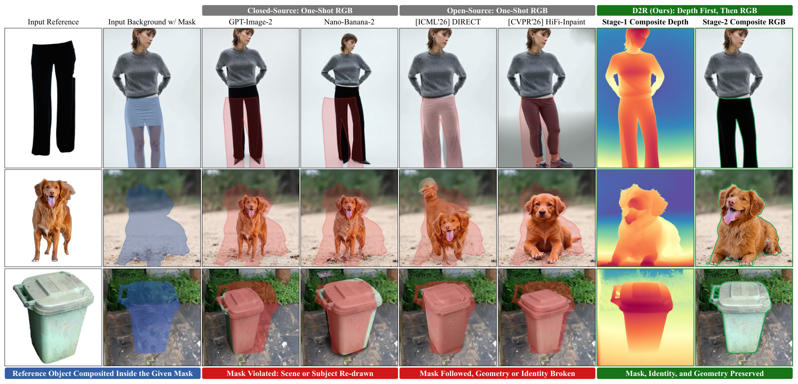
Depth first, then RGB. D2R predicts composite depth (seventh column) and holds it fixed while generating RGB (eighth). It preserves the reference appearance while matching the target shape and pose; one-shot open- and closed-source baselines miss the target geometry, alter object identity, or modify the surrounding content.
A pretrained depth estimator already knows how to decode scene features into depth. D2R keeps it frozen and learns only reference-conditioned corrections to the background's features, so the unchanged decoder outputs the depth of a scene that does not exist yet. Holding this composite depth fixed during RGB synthesis cuts category-disjoint AbsRel by 43.7% and improves PSNR by 2.4 dB over the matched RGB baseline.
A background, a reference, and a 2D mask guide appearance and placement, but they leave the geometry of the completed scene implicit. We call the missing condition composite depth: the depth of the entire scene after compositing.
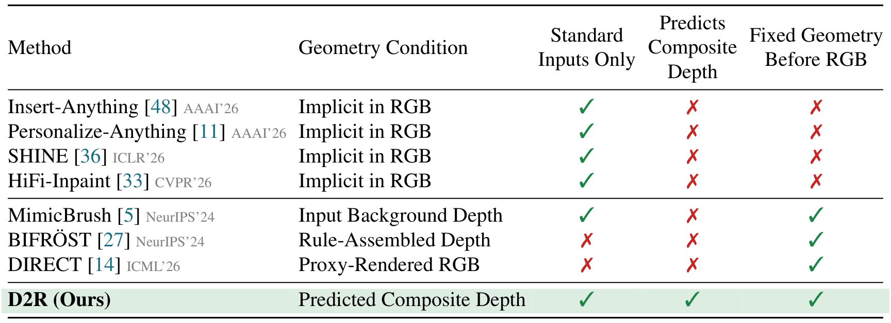
How existing methods obtain geometry. Most methods infer it implicitly during RGB denoising. Others reuse the depth of an input image, assemble foreground and background depth by rules, or need a user-posed 3D proxy. D2R predicts composite depth from the standard inputs alone and fixes it before RGB generation.
Reference-based object compositing inserts or replaces an object using a background image, a reference image, and a 2D compositing mask. These inputs guide appearance and placement but leave the completed scene's geometry implicit, which can distort object structure or alter the surroundings.
Our Depth-to-RGB (D2R) framework predicts composite depth for a scene not yet observed in the RGB inputs. It learns reference-conditioned corrections to a frozen depth estimator using encoder features of paired completed scenes as targets. The unchanged decoder maps the corrected representation to the intended scene's depth, which a separately trained renderer holds fixed during RGB synthesis. Under matched architecture and training, encoder-feature supervision reduces OOD Stage-1 AbsRel by 31.4% relative to decoded-depth supervision.
We also introduce AnyInsertion++ with paired in-distribution and category-disjoint splits to evaluate generalization beyond compositing training categories. The complete D2R system leads 12 open-source and 3 closed-source baselines in estimator-derived geometry and photometric quality on both paired splits. On category-disjoint data, D2R reduces AbsRel by 43.7% and improves PSNR by 2.4 dB over the matched RGB baseline. Across three unpaired benchmarks, D2R leads both identity metrics and reduces mean CLIP reference cosine distance by 55% relative to the strongest baseline.
We address the missing geometric condition in reference-based object compositing: predicting the completed scene's relative depth from a background image, a reference image, and a 2D compositing mask.
Reference-conditioned corrections to a frozen depth estimator, supervised by encoder features of paired completed scenes, followed by an RGB renderer trained to use the resulting depth as a fixed geometric condition.
A curated benchmark with 426 paired cases and a category-disjoint split. D2R leads all 15 baselines on both paired splits and on both identity metrics across three unpaired benchmarks.
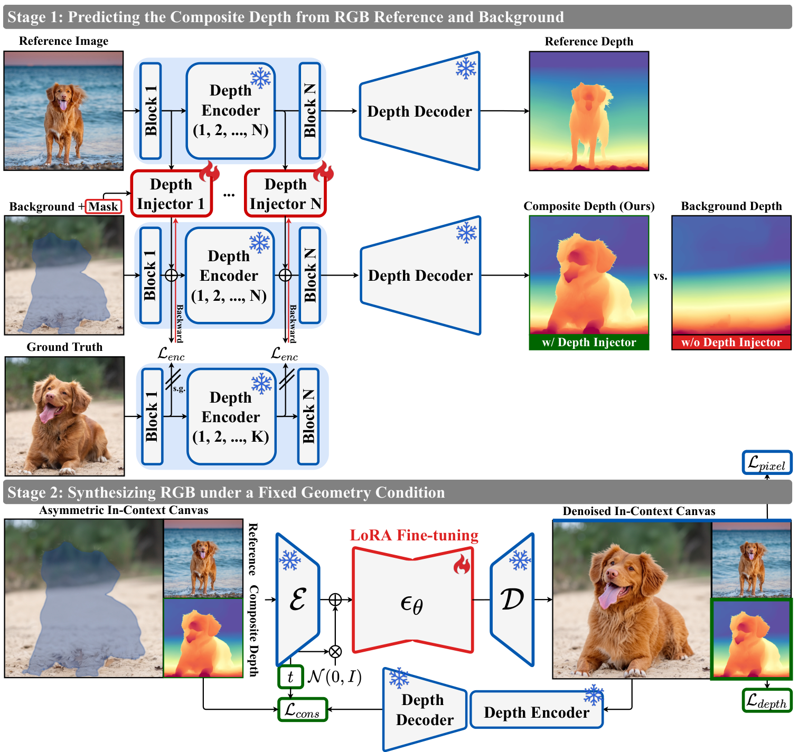
Two stages: predict the composite's depth, then render RGB under it. Stage 1 predicts composite depth through reference-conditioned corrections to background features in a frozen depth estimator. Stage 2 synthesizes RGB with this depth held fixed throughout sampling.
The encoder and decoder of the depth estimator stay frozen. Mask-conditioned depth injectors, attached at the encoder blocks the decoder reads, attend to background and reference features and add residual corrections. Training matches the corrected features to the encoder features of the paired completed scene, so the unchanged decoder already maps them to the intended depth. Zero-initialized projections start from the frozen estimator, and corrections span the full token grid so object and surrounding geometry are inferred jointly.
The masked background, the reference, and the composite depth are arranged as patches on one in-context canvas, and only LoRA parameters of the denoiser are trained. Besides the RGB loss, a depth-patch denoising loss and an RGB-depth consistency loss teach the renderer to follow the condition: the frozen estimator is applied to the one-step clean RGB estimate and compared with the paired target, weighted by 1−t to discount noisy early estimates. The depth patch receives predicted or ground-truth depth with equal probability, exposing the renderer to prediction errors without using them as targets.
Stage 1 predicts the composite depth in a single feed-forward pass (56.5 ms, about 0.25% of the FLUX sampling time), and the same depth is reused across all 28 RGB sampling steps. No completed target image, measured depth, or user-posed 3D proxy is needed at inference.
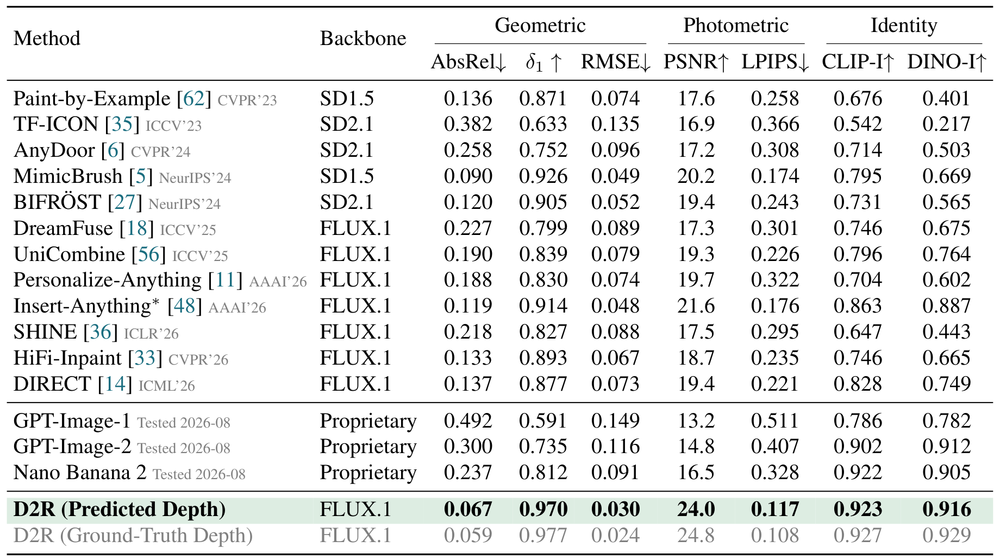
Category-Disjoint Split of AnyInsertion++ (139 cases). Object categories are absent from compositing training. D2R leads every geometric, photometric, and identity metric; against the retrained Insert-Anything* it lowers AbsRel from 0.119 to 0.067 and raises PSNR from 21.6 to 24.0 dB. Supplying ground-truth composite depth instead of the Stage-1 prediction changes AbsRel by only about 8 to 12%.
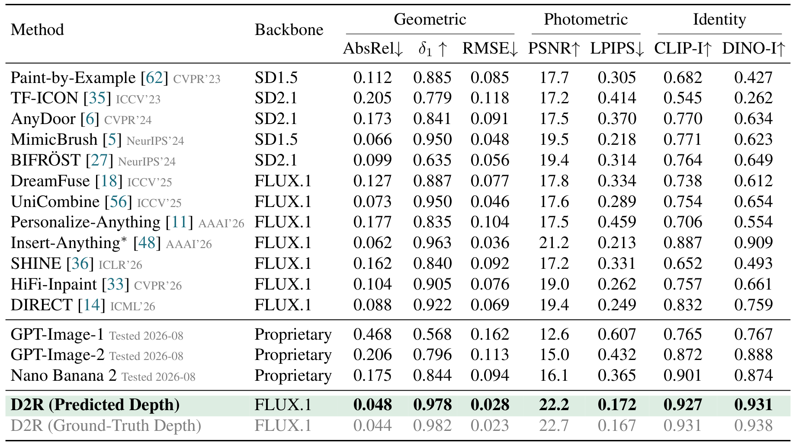
In-Distribution Split of AnyInsertion++ (287 cases). Relative to the strongest baseline for each metric across both paired splits, D2R reduces AbsRel by at least 22% and LPIPS by at least 19%, while improving PSNR by at least 1.0 dB.
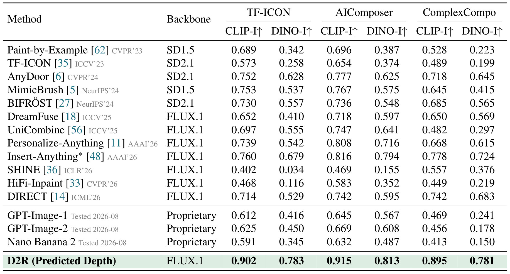
Unpaired Benchmarks (TF-ICON, AIComposer, ComplexCompo; 332, 272, and 300 cases). Without any identity-specific loss, D2R leads both identity metrics on all three benchmarks, reducing mean reference cosine distance by 55.4% with CLIP and 22.6% with DINO over Insert-Anything*.
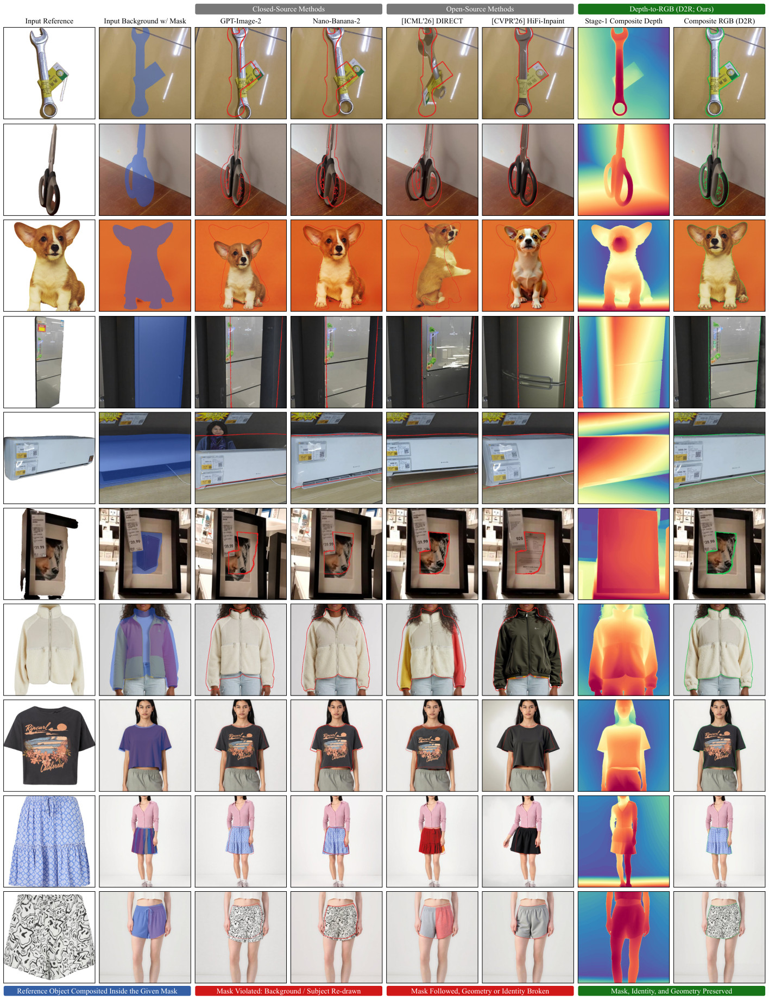
Qualitative results on the category-disjoint split. Columns follow the teaser: reference, background with mask, two closed-source and two open-source baselines, then D2R's Stage-1 composite depth and the resulting RGB. All D2R examples use predicted depth.
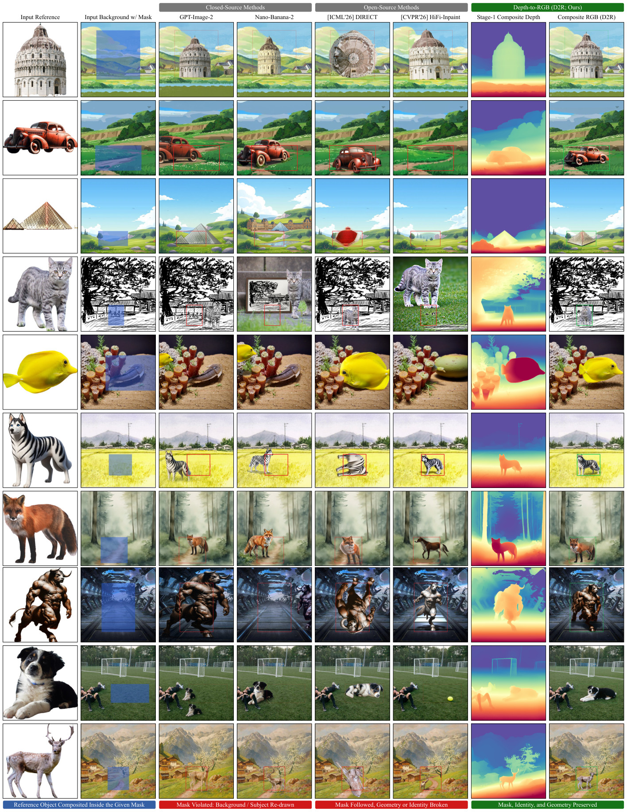
Qualitative results on AIComposer. A depth sensor viewing a flat picture measures only its surface, but a learned estimator infers relative depth from RGB cues. D2R repurposes this capability to predict the intended composite's geometry in illustrated landscapes and an ink drawing.
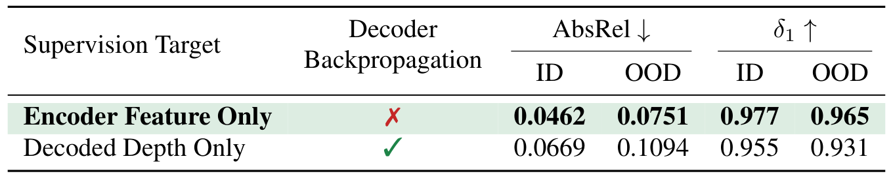
Same injector, frozen encoder and decoder; only the supervision target changes. Matching the completed scene's encoder features lowers Stage-1 AbsRel by 30.9% in-distribution and 31.4% out-of-distribution relative to supervising the decoded depth, without backpropagating through the decoder.
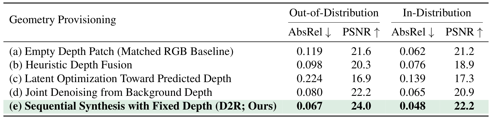
Five ways to supply geometry. Heuristic depth fusion, latent optimization toward predicted depth, and joint denoising from background depth each trail sequential synthesis under a fixed predicted depth, which improves both metrics on both splits.
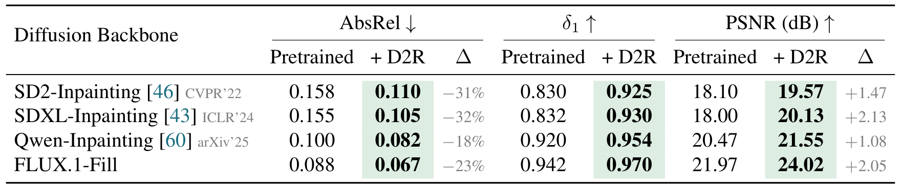
The same Stage-1 depth, four RGB generators. Adapting SD2, SDXL, Qwen, and FLUX.1-Fill to use the depth condition reduces category-disjoint AbsRel by 18% to 32% and raises PSNR by 1.08 to 2.13 dB over their pretrained versions.
@article{jo2026d2r,
title = {Depth-to-RGB: Repurposing a Frozen Depth Estimator for Geometry-Guided Compositing},
author = {Jo, Sanghyun and Lim, Chae Yeon and Lee, Donghwan and Kim, Sihyun and Kim, Soo Ye and Kim, Kyungsu},
journal = {arXiv preprint arXiv:2610.09125},
year = {2026}
}